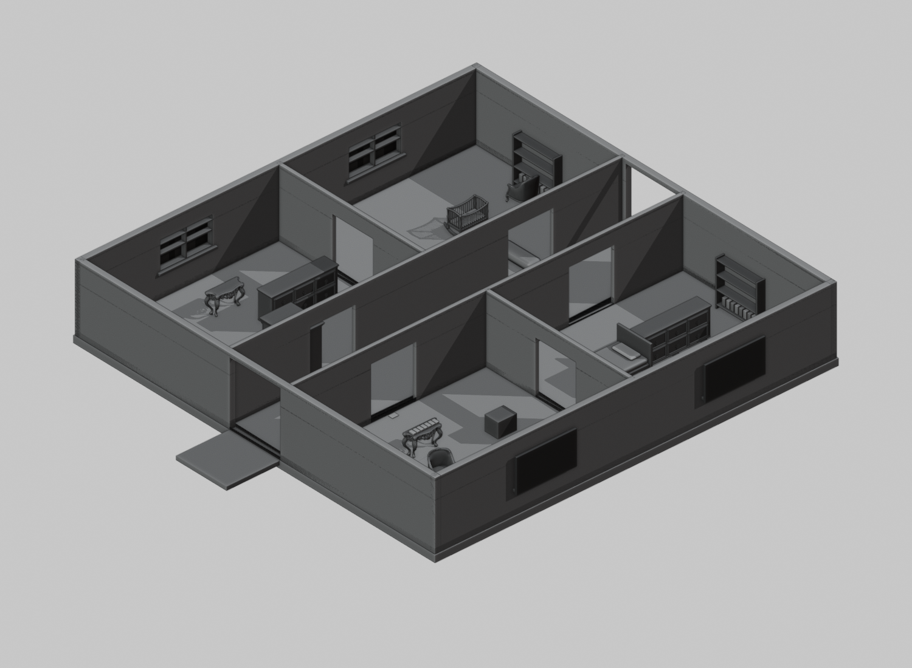
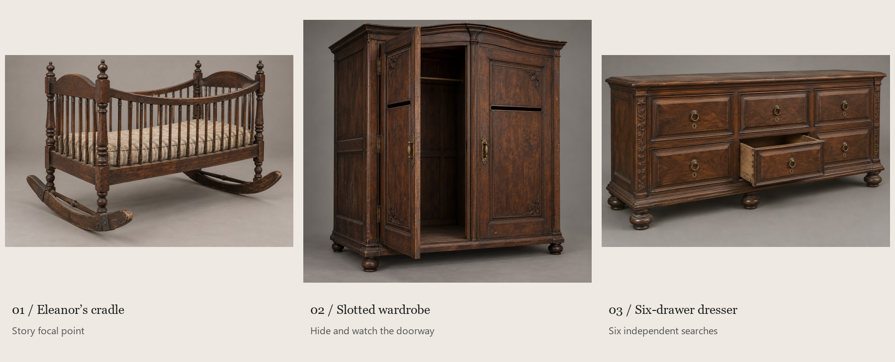

The empty cradle
Curved rocking runners, turned spindles, a sagging mattress and visible joinery. A restrained movement and localized creak can become a story-driven scare.
A room that tells her story — and gives the players somewhere to hide.

Actual Blender concept geometry, shown in neutral clay. This is a layout preview, not the final textured room or a game screenshot.
The empty upstairs chamber becomes a connected nursery suite: a dressing room, the nursery, a reading room, and an attendant’s room. Six internal openings create two loops around the central passage.
An empty rocking cradle suggests Eleanor’s loss. The keeper remains upstairs. Drawers, cupboards and books carry the story without floating signs or highlighted key locations.
The plan comes from the modeled geometry. Ceiling fixtures have their own layer. The room stays within the existing 21 × 21 metre upstairs footprint.

Image-generated design references, not finished 3D assets. Exact prompts and provenance are saved in prompts.json. The Blender file contains editable construction prototypes of these designs.
Curved rocking runners, turned spindles, a sagging mattress and visible joinery. A restrained movement and localized creak can become a story-driven scare.
Real depth, an empty interior, separated door leaves and an actual eye-level slit. The view out must be verified with the player’s hiding camera.
Six separate drawer boxes, ring pulls, keyholes and a full back. Opening sounds should attract Eleanor on the existing difficulty schedule.
| Area | Prepared now | Still required |
|---|---|---|
| Room | Editable Blender concept, real apertures, two circulation loops | Approved composition, final surfaces, collision and ghost-route checks |
| Furniture | Three reference designs and modeled construction prototypes | UVs, aged PBR textures, animation pivots, mobile LODs |
| Atmosphere | Fixture locations and story-driven room arrangement | Runtime lighting, audio balancing and scare timing |
| Monster / opening story | Existing game remains the baseline | Separate character-art and cinematic pass |
| Release | Existing v0.8.0 stays available | Integrated build, Android/multiplayer regression, new APK |
Approval state: Function pending · Form not started · Runtime not started
Build 3D Game Rooms supplies the design gates; Contour3D guides editable construction and inspection. Blender authors the geometry for the existing Godot game. Unity/Unreal tools require their own projects/editors; PadConsole is a party-game catalogue. No engine migration, external paid asset service, or new production export is performed in this proposal.
The bundled room validator requires Meshy pricing and a positive paid-credit ceiling, even on a local-only path. Its output is retained as a failed/pending gate. No pricing, asset approval, performance result, or human approval is fabricated.